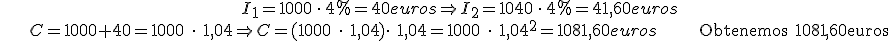
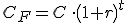
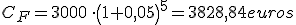
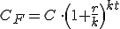
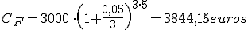

Matemática financiera
Interés compuesto
Por otro lado, cuando añadimos los intereses a la cantidad prestada, tenemos interés compuesto. La unidad en que se mide el tiempo, t, marca el momento en que se incorporan los intereses al capital, el llamado período de capitalización.
Si el período de capitalización es de un año:
Ejemplo 1: Un banco ofrece un rédito del 4%. ¿Qué cantidad obtendremos si depositamos 1000 € durante 2 años?

Entonces, la cantidad final será:

Ejemplo 2: Un banco ofrece un rédito del 5%. ¿Qué cantidad obtendremos si depositamos 3000 € durante 5 años?

Si el período de capitalización es menor de un año y se recibe k veces al año, nos quedaría

Ejemplo 3: Un banco ofrece un tipo de interés del 5% que se capitaliza 3 veces al año. ¿Qué cantidad obtendremos si depositamos 3000 € durante 5 años?

Ejercicio:Calcula el dinero que hemos de invertir a un tipo de interés compuesto de 5% a dos años para obtener 10.000 €
Solución: 9070,29 €
Obra publicada con Licencia Creative Commons Reconocimiento No comercial Compartir igual 4.0